CODING AGENTS AS PIXEL WORLD MODELS
traex/DeepSeek-V4.1-Flash · 0013
尚未保存可播放视频
Static locked-off single-shot with fixed frame throughout filmed with constant framerate in real-time. The scene shows a realistic scientific demonstration. The scene only contains the described setup and actions. The black plastic crate sits on a wooden table. The orange inflatable basketball is released over the black plastic crate.
failed逐轮保存的候选
回放视频、检查图与代码变化。
每份候选均可单独播放。实际图片检查记录在下方工具轨迹中。
可观测工具轨迹
实际执行的命令与返回图片。
命令 1exit 0
/bin/bash -c "pwd && rg --files -g 'prompt.txt' -g 'GENERATION_RULES.md' -g 'first_frame.png' -g '"'!**/.git/**'"'"
命令 2exit 0
/bin/bash -c "sed -n '1,240p' GENERATION_RULES.md"
命令 3exit 0
/bin/bash -c "sed -n '1,240p' prompt.txt"
命令 4exit 0
/bin/bash -c "find . -maxdepth 2 -type f -not -path './.git/*' -printf '%p\\n' | sort | sed -n '1,240p'"
命令 5exit 0
/bin/bash -c "sed -n '1,260p' artifact_io.py"
命令 6exit 0
/bin/bash -c "python - <<'PY'
from PIL import Image
im=Image.open('first_frame.png')
print(im.size, im.mode)
print(im.getpixel((128,20)), im.getpixel((128,70)), im.getpixel((128,130)))
PY"命令 7exit 0
/bin/bash -c "python - <<'PY' import importlib.util for m in ['numpy','PIL','cv2','scipy','imageio']: print(m, bool(importlib.util.find_spec(m))) PY"
命令 8exit 0
/bin/bash -c "python - <<'PY'
from PIL import Image
im=Image.open('first_frame.png')
im.crop((80,0,215,125)).resize((540,500)).save('.tmp/crop.png')
PY"命令 9exit 0
/bin/bash -c "python - <<'PY'
import cv2, numpy as np
im=cv2.imread('first_frame.png')
hsv=cv2.cvtColor(im, cv2.COLOR_BGR2HSV)
# orange: hue 0-25, saturation > 120, value > 50
m=((hsv[:,:,0] < 25)&(hsv[:,:,1]>110)&(hsv[:,:,2]>40)).astype(np.uint8)
n, lab, stats, cent=cv2.connectedComponentsWithStats(m)
for i in range(1,n):
if stats[i,cv2.CC_STAT_AREA]>100:
print(i,stats[i].tolist(),cent[i].tolist())
ys,xs=np.where(m>0)
print(xs.min(),xs.max(),ys.min(),ys.max(),len(xs))
PY"命令 10exit 0
/bin/bash -c "python - <<'PY'
from PIL import Image
im=Image.open('first_frame.png')
im.crop((90,35,215,125)).resize((1000,720), Image.Resampling.NEAREST).save('.tmp/crate_nearest.png')
PY"命令 11exit 0
/bin/bash -c "python - <<'PY'
import cv2, numpy as np
im=cv2.imread('first_frame.png')
hsv=cv2.cvtColor(im, cv2.COLOR_BGR2HSV)
m=((hsv[:,:,0] < 25)&(hsv[:,:,1]>100)&(hsv[:,:,2]>35)).astype(np.uint8)*255
n, lab, stats, cent=cv2.connectedComponentsWithStats(m)
for i in range(1,n):
if stats[i,cv2.CC_STAT_AREA]>200:
print(i,stats[i].tolist(),cent[i].tolist())
PY"命令 12exit 0
/bin/bash -c "python - <<'PY'
from PIL import Image
im=Image.open('first_frame.png')
im.crop((110,0,180,60)).resize((700,600), Image.Resampling.NEAREST).save('.tmp/ball_nearest.png')
PY"命令 13exit 0
/bin/bash -c "python - <<'PY'
import cv2, numpy as np
im=cv2.imread('first_frame.png')
hsv=cv2.cvtColor(im, cv2.COLOR_BGR2HSV)
# ball region
m=np.zeros(im.shape[:2],np.uint8)
roi=(hsv[:,:,0]<25)&(hsv[:,:,1]>90)&(hsv[:,:,2]>25)
m[0:58,112:180]=roi[0:58,112:180]*255
# add small border
m=cv2.dilate(m,np.ones((3,3),np.uint8),iterations=1)
bg=cv2.inpaint(im,m,7,cv2.INPAINT_TELEA)
cv2.imwrite('.tmp/bg_inpaint.png',bg)
cv2.imwrite('.tmp/bg_inpaint_crop.png',cv2.resize(bg[0:80,90:210],(960,640),interpolation=cv2.INTER_NEAREST))
print('mask',m.sum()//255)
PY"命令 14exit 0
/bin/bash -c "python - <<'PY'
import cv2, numpy as np
im=cv2.imread('first_frame.png')
for y in [40,45,50,55,60,65,70]:
print('y',y,[(x, im[y,x].tolist()) for x in [110,120,128,136,144,152,160,168,176,184]])
PY"命令 15exit 0
/bin/bash -c "python - <<'PY'
from PIL import Image
im=Image.open('first_frame.png')
im.crop((90,35,210,100)).resize((1200,650), Image.Resampling.NEAREST).save('.tmp/crate_full_nearest.png')
PY"命令 16exit 0
/bin/bash -c "ls -la && find . -maxdepth 2 -type f -name 'task_spec.json' -o -name '*.json' -print"
命令 17exit 0
/bin/bash -c "python - <<'PY'
from PIL import Image
im=Image.open('first_frame.png')
for y in [5,10,15,20,25,30,35,40,45,50]:
print(y, [im.getpixel((x,y)) for x in [120,125,130,135,140,144,148,152,157,162,167]])
PY"命令 18exit 0
/bin/bash -c "python - <<'PY'
import cv2, numpy as np
im=cv2.imread('first_frame.png')
hsv=cv2.cvtColor(im, cv2.COLOR_BGR2HSV)
# print orange extents per row in top area
m=(hsv[:,:,0]<25)&(hsv[:,:,1]>90)&(hsv[:,:,2]>25)
for y in range(0,60,3):
xs=np.where(m[y,:210])[0]
if len(xs): print(y,xs.min(),xs.max())
PY"命令 19exit 0
/bin/bash -c "python - <<'PY'
import numpy as np
from PIL import Image
im=np.array(Image.open('first_frame.png')).astype(np.float32)
# gradient magnitude
from scipy.ndimage import sobel
g=np.hypot(sobel(im[:,:,0],0),sobel(im[:,:,0],1))
for y in range(35,65):
vals=np.argsort(g[y,:210])[-8:]
print(y, sorted(vals.tolist()))
PY"命令 20exit 0
/bin/bash -c "python - <<'PY'
import cv2, numpy as np
im=cv2.imread('first_frame.png')
hsv=cv2.cvtColor(im, cv2.COLOR_BGR2HSV)
m=((hsv[:,:,0] < 25)&(hsv[:,:,1]>100)&(hsv[:,:,2]>35)).astype(np.uint8)*255
n, lab, stats, cent=cv2.connectedComponentsWithStats(m)
for i in range(1,n):
if stats[i,cv2.CC_STAT_AREA]>100:
x,y,w,h,a=stats[i]
print(i,x,y,w,h,a)
if y<60:
crop=(lab[y:y+h,x:x+w]==i).astype(np.uint8)*255
cv2.imwrite('.tmp/ballmask.png',crop)
PY"命令 21exit 0
/bin/bash -c "python - <<'PY'
import cv2, numpy as np
im=cv2.imread('first_frame.png')
# Show color line profile at y=42 around x 120-170 BGR
for y in [38,42,46]:
print('row',y)
for x in range(120,169,2): print(x,tuple(im[y,x].tolist()),end='; ')
print()
PY"命令 22exit 0
/bin/bash -c "python - <<'PY'
from PIL import Image
im=Image.open('first_frame.png')
im.crop((95,25,210,110)).resize((1150,850), Image.Resampling.NEAREST).save('.tmp/crate_wide.png')
PY"命令 23exit 0
/bin/bash -c "python - <<'PY'
import numpy as np
from PIL import Image
im=np.array(Image.open('first_frame.png'))
# count dark-ish in rows within crate
for y in range(45,90,2):
arr=im[y,95:210]
dark=((arr[:,0]<60)&(arr[:,1]<60)&(arr[:,2]<60)).sum()
gray=((abs(arr[:,0].astype(int)-arr[:,1])<10)&(abs(arr[:,1].astype(int)-arr[:,2])<10)).sum()
print(y,'dark',dark,'gray',gray,'mean',arr.mean(0).round(0))
PY"命令 24exit 0
/bin/bash -c "python - <<'PY'
import cv2,numpy as np
im=cv2.imread('first_frame.png')
# gray difference from wall/wood: isolate dark crate region; print corner/mid pixels
for y in [52,55,60,70,80,90,100,105,110,115,120]:
print('y',y)
for x in [98,102,106,110,120,130,140,150,160,170,180,190,198]:
b,g,r=map(int,im[y,x]); print(f'{x}:{r:3d},{g:3d},{b:3d}',end=' | ')
print()
PY"命令 25exit 0
/bin/bash -c "python - <<'PY'
import cv2, numpy as np
im=cv2.imread('first_frame.png')
# save dark mask
b,g,r=cv2.split(im)
m=((r<100)&(g<100)&(b<100)).astype(np.uint8)*255
# region crate 45:125 90:210
m2=np.zeros_like(m); m2[45:125,90:210]=m[45:125,90:210]
cv2.imwrite('.tmp/darkmask.png',m2)
PY"命令 26exit 0
/bin/bash -c "python - <<'PY'
from PIL import Image
im=Image.open('first_frame.png')
im.crop((95,45,205,95)).resize((1100,500), Image.Resampling.NEAREST).save('.tmp/crate_top.png')
PY"命令 27exit 0
/bin/bash -c "python - <<'PY'
from PIL import Image
im=Image.open('first_frame.png')
im.crop((85,70,205,125)).resize((1200,550), Image.Resampling.NEAREST).save('.tmp/crate_bottom.png')
PY"命令 28exit 0
/bin/bash -c "python - <<'PY'
import numpy as np
from PIL import Image
im=np.array(Image.open('first_frame.png'))
# scan vertical color at x around 100-108, y 45-125
for x in [100,101,102,103,104,105,106,107,108,109,110]:
print('x',x)
for y in range(45,126,5):
print(y,tuple(im[y,x]),end='; ')
print()
PY"命令 29exit 0
/bin/bash -c "python - <<'PY'
from PIL import Image
im=Image.open('first_frame.png')
im.crop((120,20,195,90)).resize((900,840), Image.Resampling.NEAREST).save('.tmp/crate_rim.png')
PY"命令 30exit 0
/bin/bash -c "python - <<'PY'
import cv2, numpy as np
from PIL import Image
im=cv2.imread('first_frame.png')
h,w=im.shape[:2]
yy,xx=np.mgrid[:h,:w]
# ball circle, use generous mask including antialias edge
r=29.2
mask=((xx-144.5)**2+(yy-25.5)**2 <= r*r).astype(np.uint8)*255
# include a couple of pixels below the rim where ball is hidden
plate=cv2.inpaint(im,mask,5,cv2.INPAINT_TELEA)
cv2.imwrite('.tmp/plate.png',plate)
# also nearest/telea crop
cv2.imwrite('.tmp/plate_crop.png',cv2.resize(plate[0:85,90:210],(960,680),interpolation=cv2.INTER_NEAREST))
# diff location
print('mask pixels',int(mask.sum()/255))
PY"命令 31exit 0
/bin/bash -c "python - <<'PY'
from PIL import Image
im=Image.open('.tmp/plate.png')
im.crop((100,0,190,70)).resize((900,700), Image.Resampling.NEAREST).save('.tmp/plate_ballregion.png')
PY"命令 32exit 0
/bin/bash -c "python - <<'PY'
import cv2,numpy as np
im=cv2.imread('first_frame.png')
h,w=im.shape[:2]; yy,xx=np.mgrid[:h,:w]
mask=((xx-144.5)**2+(yy-25.5)**2 <= 29.2**2).astype(np.uint8)*255
m=cv2.inpaint(im,mask,3,cv2.INPAINT_NS)
cv2.imwrite('.tmp/plate_ns.png',m)
cv2.imwrite('.tmp/plate_ns_crop.png',cv2.resize(m[0:80,100:190],(900,800),interpolation=cv2.INTER_NEAREST))
PY"命令 33exit 0
/bin/bash -c "python - <<'PY'
import cv2,numpy as np
im=cv2.imread('first_frame.png')
h,w=im.shape[:2]; yy,xx=np.mgrid[:h,:w]
# ball lower part overlaps top rim. Cut horizontal region across crate rim y=47..52 separately
mask=((xx-144.5)**2+(yy-25.5)**2 <= 29.2**2).astype(np.uint8)*255
# inpaint only above y=48 (wall), restore rim region from original except center gap? test
mask2=mask.copy(); mask2[48:]=0
p=cv2.inpaint(im,mask2,4,cv2.INPAINT_TELEA)
# replace y=48 onward by original for x=120..169? that leaves orange from ball obscuring rim? inspect
cv2.imwrite('.tmp/plate_above48.png',p)
cv2.imwrite('.tmp/plate_above48_crop.png',cv2.resize(p[0:80,100:190],(900,800),interpolation=cv2.INTER_NEAREST))
PY"命令 34exit 0
/bin/bash -c "python - <<'PY'
import cv2,numpy as np
im=cv2.imread('first_frame.png')
# inspect y lines 48-52 via mask
hsv=cv2.cvtColor(im,cv2.COLOR_BGR2HSV)
for y in range(47,54):
xs=np.where((hsv[y,:,1]>80)&(hsv[y,:,0]<25))[0]
print(y, xs.min() if len(xs) else None, xs.max() if len(xs) else None)
PY"命令 35exit 0
/bin/bash -c "python - <<'PY'
import cv2,numpy as np
im=cv2.imread('first_frame.png')
# color mask limited left 190 to avoid right orange pole
hsv=cv2.cvtColor(im,cv2.COLOR_BGR2HSV)
for y in range(45,56):
xs=np.where((hsv[y,:190,1]>100)&(hsv[y,:190,0]<25))[0]
print(y, xs.min() if len(xs) else None, xs.max() if len(xs) else None)
PY"命令 36exit 0
/bin/bash -c "python - <<'PY'
import cv2,numpy as np
im=cv2.imread('first_frame.png')
hsv=cv2.cvtColor(im,cv2.COLOR_BGR2HSV)
for y in range(0,54):
xs=np.where((hsv[y,:200,1]>100)&(hsv[y,:200,0]<25))[0]
if len(xs): print(y, xs.min(), xs.max())
PY"命令 37exit 0
/bin/bash -c "python - <<'PY'
from PIL import Image
im=Image.open('first_frame.png')
im.crop((105,42,180,58)).resize((1500,320), Image.Resampling.NEAREST).save('.tmp/contact_rim.png')
PY"命令 38exit 0
/bin/bash -c "python - <<'PY'
from PIL import Image
im=Image.open('first_frame.png')
im.crop((130,35,190,85)).resize((1200,1000), Image.Resampling.NEAREST).save('.tmp/right_top.png')
PY"视觉工具实际返回图片 1

视觉工具实际返回图片 2
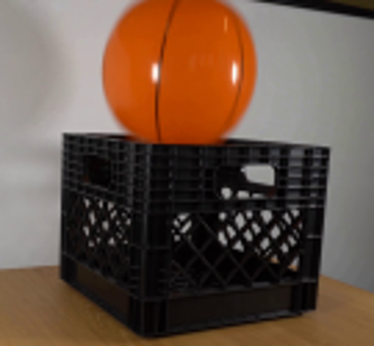
视觉工具实际返回图片 3
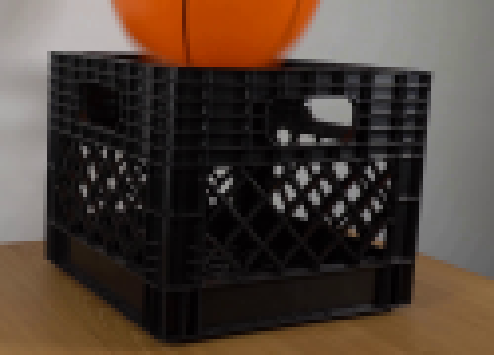
视觉工具实际返回图片 4
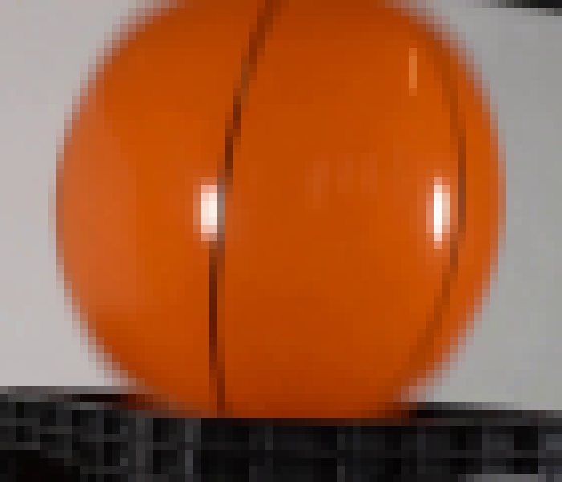
视觉工具实际返回图片 5
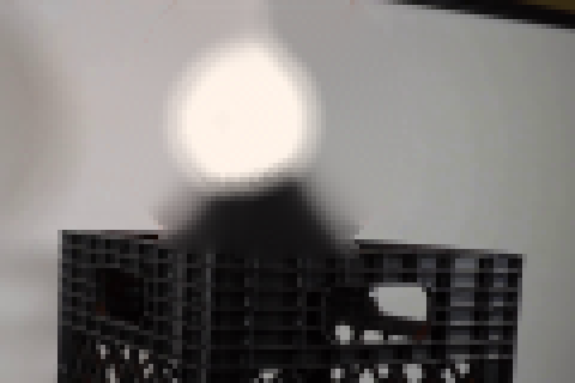
视觉工具实际返回图片 6
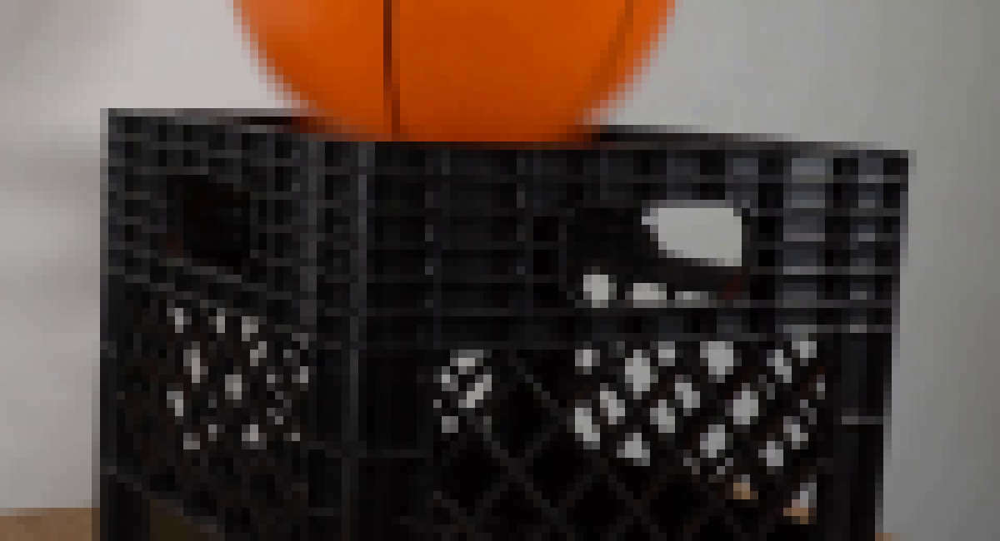
视觉工具实际返回图片 7
视觉工具实际返回图片 8
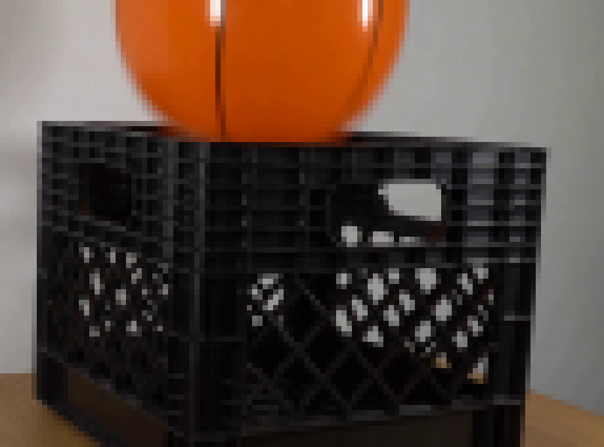
视觉工具实际返回图片 9
视觉工具实际返回图片 10
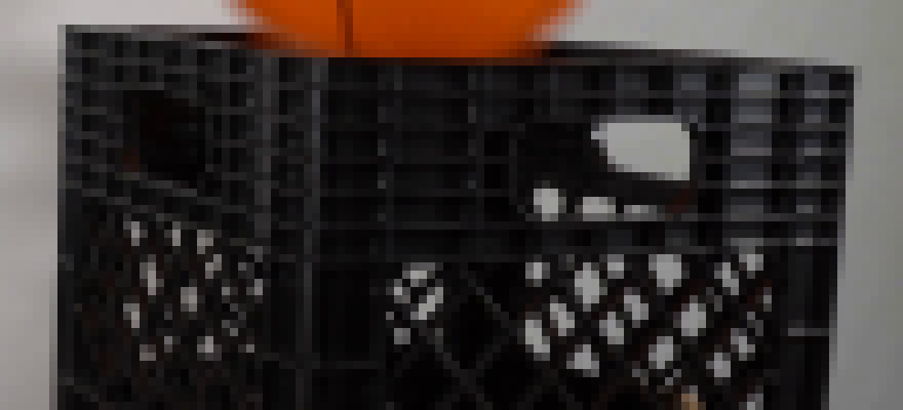
视觉工具实际返回图片 11
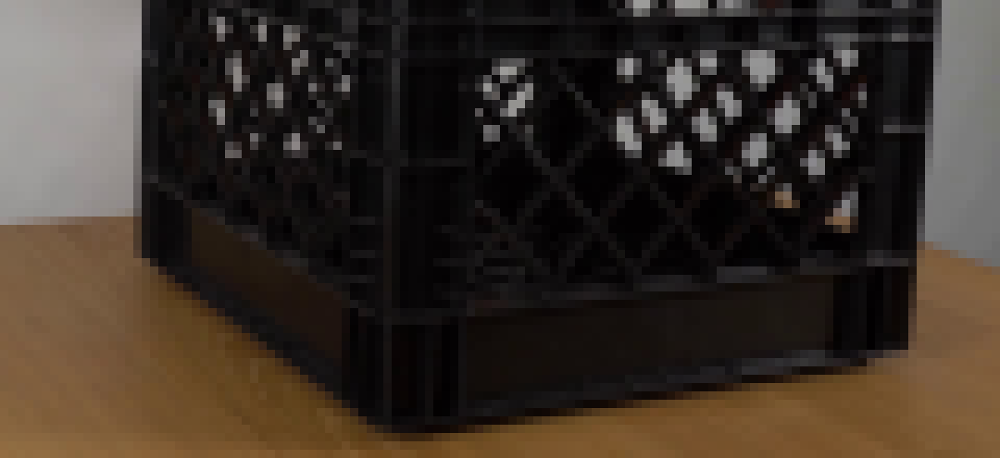
视觉工具实际返回图片 12
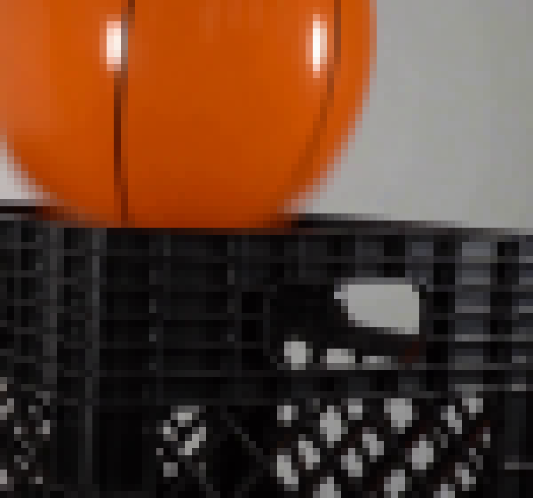
视觉工具实际返回图片 13
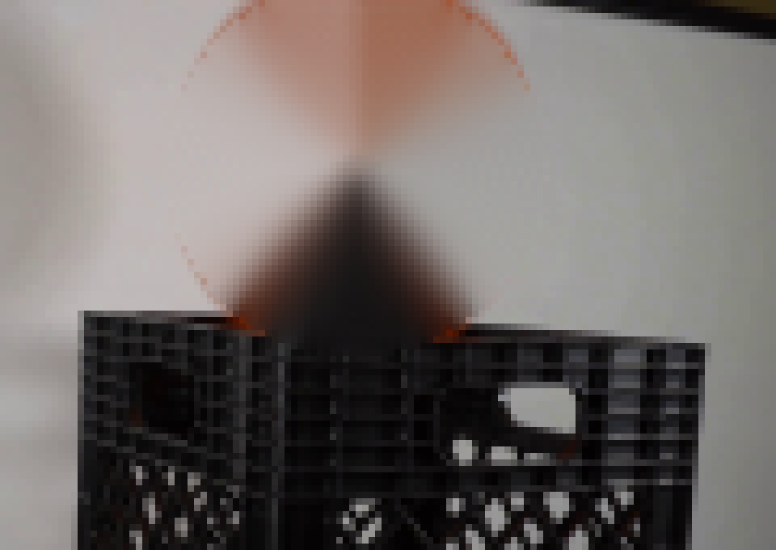
视觉工具实际返回图片 14
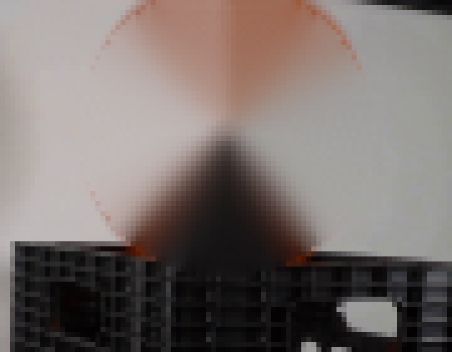
视觉工具实际返回图片 15
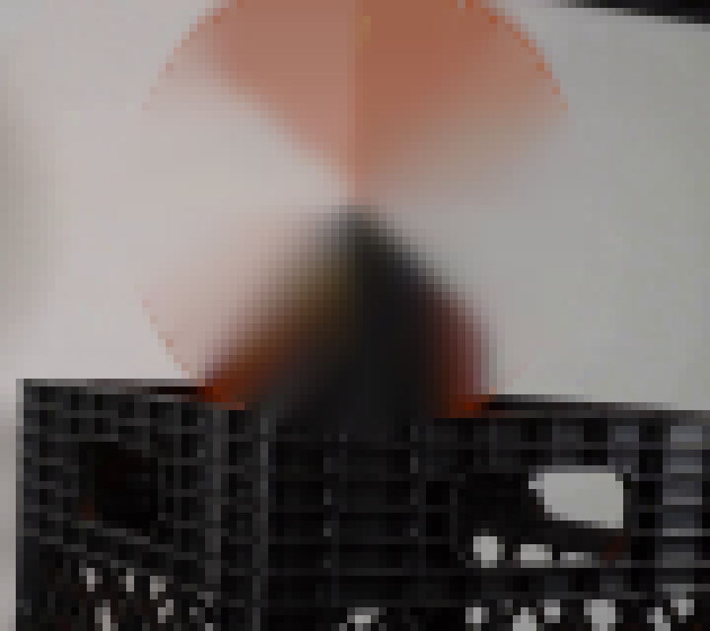
视觉工具实际返回图片 16
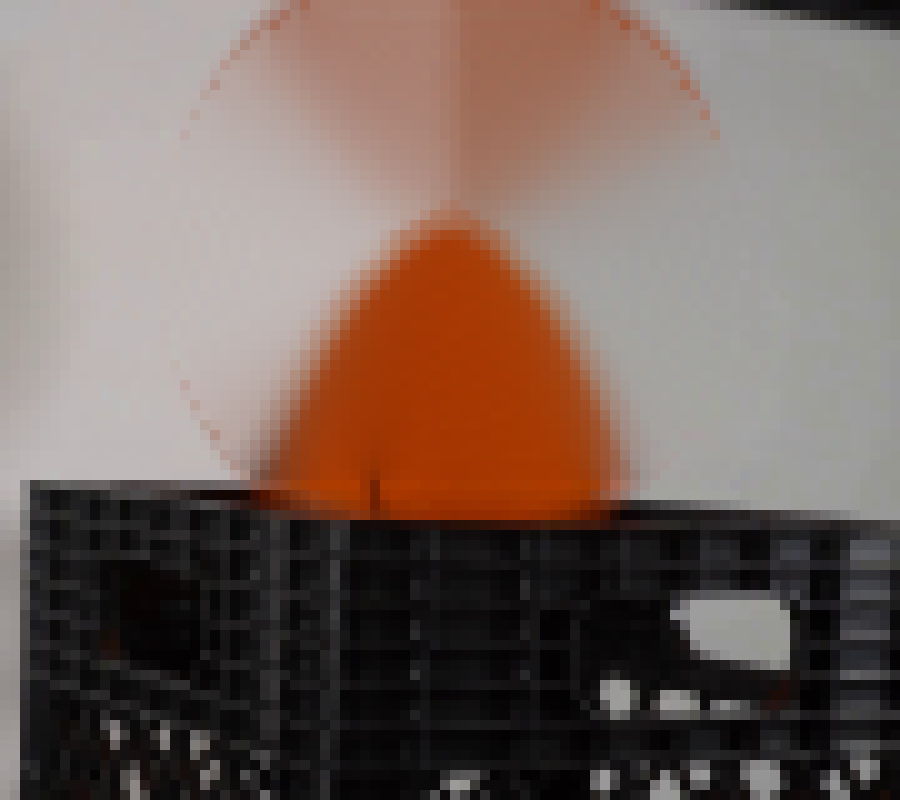
视觉工具实际返回图片 17
视觉工具实际返回图片 18
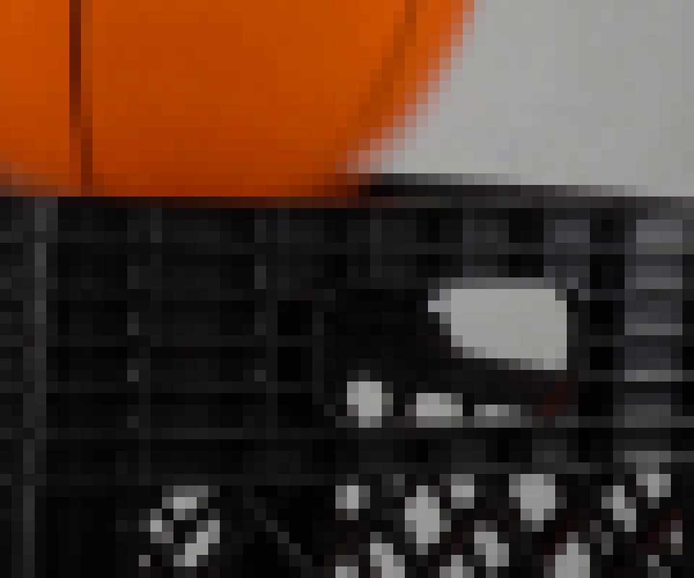
保存候选 0 份；完成命令 38 次；可验证图片返回 18 张。原始 API 响应与完整日志保留在本地。